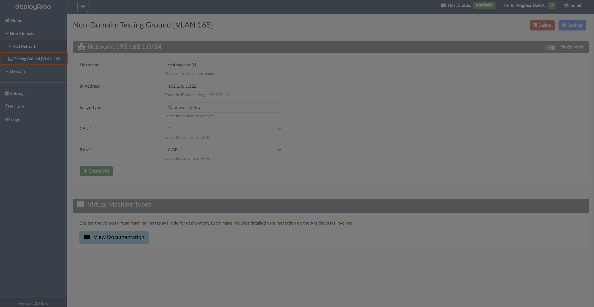
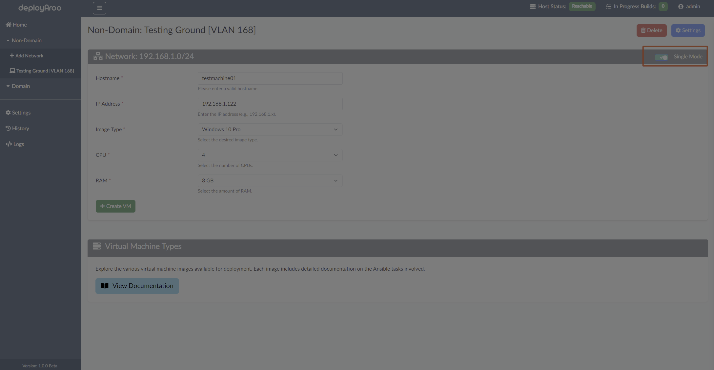
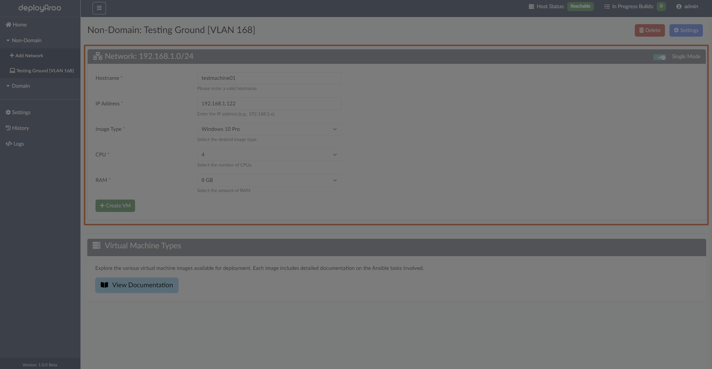
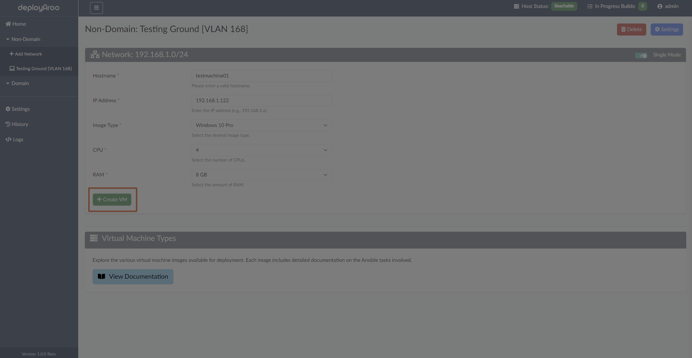
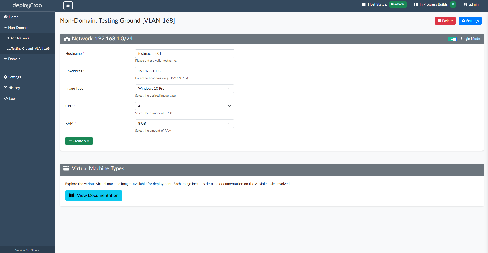
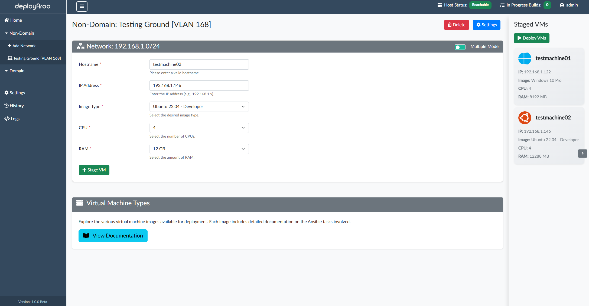
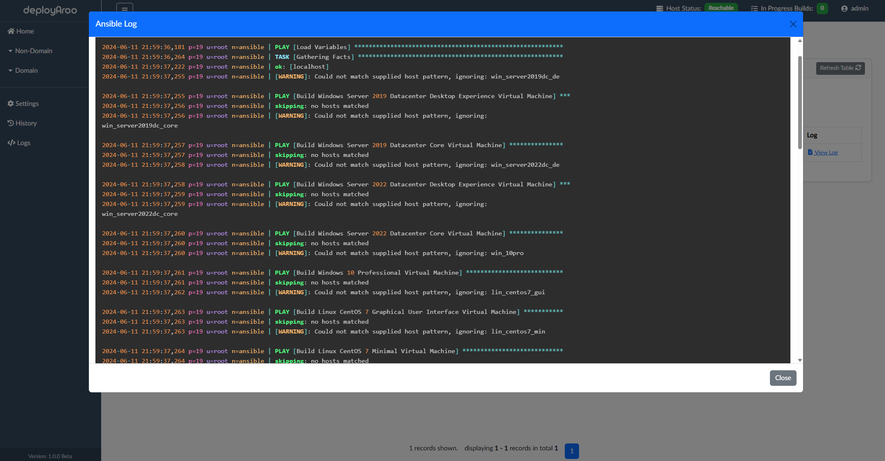
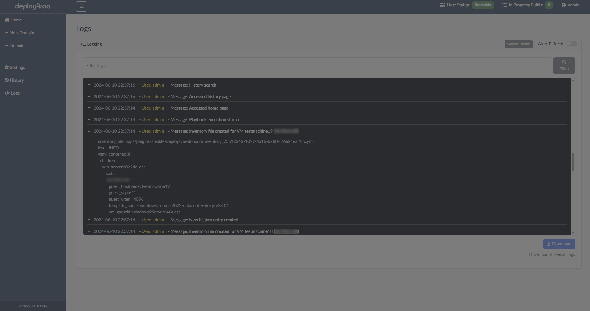

Deploying Virtual Machines¶
Deployaroo allows you to deploy virtual machines (VMs) in both non-domain and domain networks. You can choose to operate in single mode or multiple mode for deploying VMs. Follow these detailed steps to deploy your VMs efficiently.
Steps to Deploy Virtual Machines¶
- Navigate to the Network under Non-Domain or Domain:

- Select Deployment Mode:
- Flick the toggle button near the top right of the box to select the mode of operation.
- You can choose to operate in Single Mode or Multiple Mode:
- Single Mode: Deploy a single VM.
- Multiple Mode: Stage and Deploy multiple VMs at once. Further details on the modes of operation can be seen below

- Enter VM Details:
- Fill in the following required details for each VM:
- Hostname: The name of the VM you want to deploy.
- IP Address: The IP address for the VM.
- Image Type: Select the VM image type from the available options.
- CPU: Number of CPU cores for the VM.
- RAM: Amount of RAM for the VM.

- Configure Additional Settings (if applicable):
-
Depending on your deployment mode and image type, you may need to configure additional settings such as domain information or specific VM information.
-
Review Configuration:
-
Double-check all entered details to ensure accuracy.
-
Deploy the VM(s):
- Click the Create VM button to start the deployment process in single mode or click Stage VM to stage multiple VMs before ultimately clicking Deploy VMs.
- The app will build the Ansible inventory file and start the deployment of the VMs after this.

Deployment Modes¶
Single Mode¶
In Single Mode, you deploy one VM at a time:
- Select Single Mode (this is the default setting):
-
Fill in the required details (Hostname, IP Address, Image Type, CPU, RAM).
-
Deploy the VM:
- Click Create VM to start the deployment of the single VM.

Multiple Mode¶
In Multiple Mode, you can deploy multiple VMs at once:
- Select Multiple Mode:
- Ensure you are in Multiple Mode.
-
Fill in the required details for each VM and press Stage VM once per machine. The VMs will appear in the right side panel with their details.
-
Deploy the VMs:
- Click Deploy VMs to start the deployment of all specified VMs. This will create an inventory file per VM and kick off the relevant playbook for all the VMs at once.

Monitoring Deployment¶
Once the deployment process is initiated, you can monitor the status of your VMs:
- History: Track the progress of your VM deployments in real-time via Ansible logs.

- Logs: Access detailed logs to review any issues related to Deployaroo.

By following these steps, you can effectively deploy virtual machines in both non-domain and domain environments using Deployaroo.